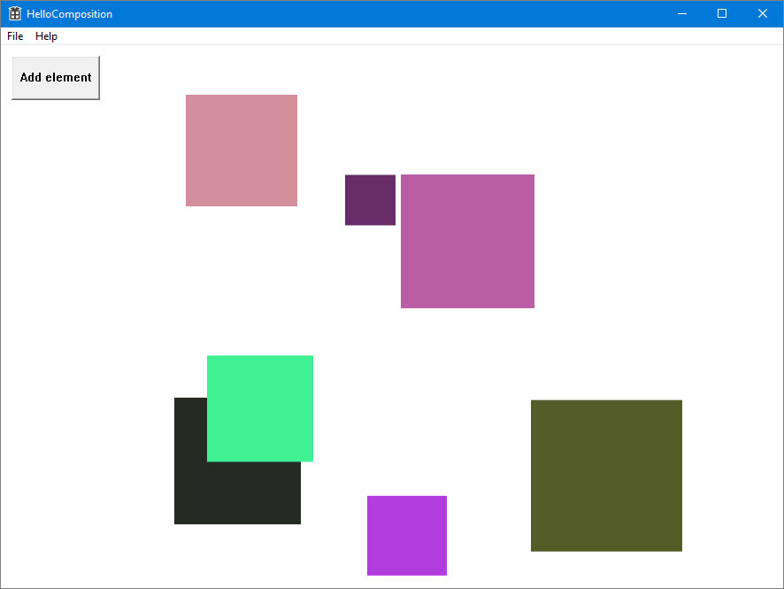
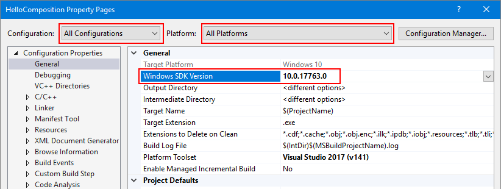
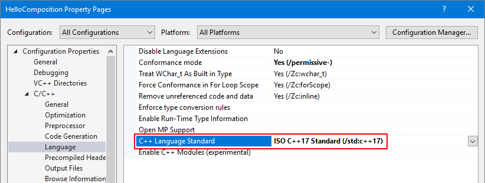
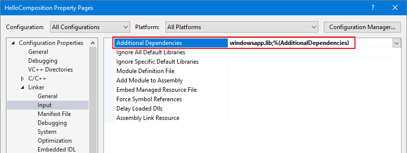
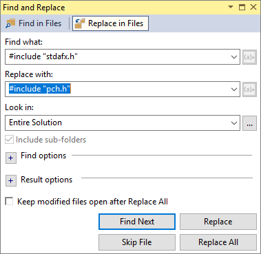

Using the Visual Layer with Win32
You can use Windows Runtime Composition APIs (also called the Visual layer) in your Win32 apps to create modern experiences that light up for Windows users.
The complete code for this tutorial is available on GitHub: Win32 HelloComposition sample.
Universal Windows Applications that need precise control over their UI composition have access to the Windows.UI.Composition namespace to exert fine grained control over how their UI is composed and rendered. This composition API is not limited to UWP apps, however. Win32 desktop applications can take advantage of the modern composition systems in UWP and Windows.
Prerequisites
The UWP hosting API has these prerequisites.
- We assume that you have some familiarity with app development using Win32 and UWP. For more info, see:
- Windows 10 version 1803 or later
- Windows 10 SDK 17134 or later
How to use Composition APIs from a Win32 desktop application
In this tutorial, you create a simple Win32 C++ app and add UWP Composition elements to it. The focus is on correctly configuring the project, creating the interop code, and drawing something simple using Windows Composition APIs. The finished app looks like this.

Create a C++ Win32 project in Visual Studio
The first step is to create the Win32 app project in Visual Studio.
To create a new Win32 Application project in C++ named HelloComposition:
Open Visual Studio and select File > New > Project.
The New Project dialog opens.
Under the Installed category, expand the Visual C++ node, and then select Windows Desktop.
Select the Windows Desktop Application template.
Enter the name HelloComposition, then click OK.
Visual Studio creates the project and opens the editor for the main app file.
Configure the project to use Windows Runtime APIs
To use Windows Runtime (WinRT) APIs in your Win32 app, we use C++/WinRT. You need to configure your Visual Studio project to add C++/WinRT support.
(For details, see Get started with C++/WinRT - Modify a Windows Desktop application project to add C++/WinRT support).
From the Project menu, open the project properties (HelloComposition Properties) and ensure the following settings are set to the specified values:
- For Configuration, select All Configurations. For Platform, select All Platforms.
- Configuration Properties > General > Windows SDK Version = 10.0.17763.0 or greater

- C/C++ > Language > C++ Language Standard = ISO C++ 17 Standard (/stf:c++17)

- Linker > Input > Additional Dependencies must include "windowsapp.lib". If it's not included in the list, add it.

Update the precompiled header
Rename
stdafx.handstdafx.cpptopch.handpch.cpp, respectively.Set project property C/C++ > Precompiled Headers > Precompiled Header File to pch.h.
Find and replace
#include "stdafx.h"with#include "pch.h"in all files.(Edit > Find and Replace > Find in Files)

In
pch.h, includewinrt/base.handunknwn.h.// reference additional headers your program requires here #include <unknwn.h> #include <winrt/base.h>
It's a good idea to build the project at this point to make sure there are no errors before going on.
Create a class to host composition elements
To host content you create with the visual layer, create a class (CompositionHost) to manage interop and create composition elements. This is where you do most of the configuration for hosting Composition APIs, including:
- getting a Compositor, which creates and manages objects in the Windows.UI.Composition namespace.
- creating a DispatcherQueueController/DispatcherQueue to manage tasks for the WinRT APIs.
- creating a DesktopWindowTarget and Composition container to display the composition objects.
We make this class a singleton to avoid threading issues. For example, you can only create one dispatcher queue per thread, so instantiating a second instance of CompositionHost on the same thread would cause an error.
Tip
If you need to, check the complete code at the end of the tutorial to make sure all the code is in the right places as you work through the tutorial.
Add a new class file to your project.
- In Solution Explorer, right click the HelloComposition project.
- In the context menu, select Add > Class....
- In the Add Class dialog, name the class CompositionHost.cs, then click Add.
Include headers and usings required for composition interop.
- In CompositionHost.h, add these includes at the top of the file.
#pragma once #include <winrt/Windows.UI.Composition.Desktop.h> #include <windows.ui.composition.interop.h> #include <DispatcherQueue.h>- In CompositionHost.cpp, add these usings at the top of the file, after any includes.
using namespace winrt; using namespace Windows::System; using namespace Windows::UI; using namespace Windows::UI::Composition; using namespace Windows::UI::Composition::Desktop; using namespace Windows::Foundation::Numerics;Edit the class to use the singleton pattern.
- In CompositionHost.h, make the constructor private.
- Declare a public static GetInstance method.
class CompositionHost { public: ~CompositionHost(); static CompositionHost* GetInstance(); private: CompositionHost(); };- In CompositionHost.cpp, add the definition of the GetInstance method.
CompositionHost* CompositionHost::GetInstance() { static CompositionHost instance; return &instance; }In CompositionHost.h, declare private member variables for the Compositor, DispatcherQueueController, and DesktopWindowTarget.
winrt::Windows::UI::Composition::Compositor m_compositor{ nullptr }; winrt::Windows::System::DispatcherQueueController m_dispatcherQueueController{ nullptr }; winrt::Windows::UI::Composition::Desktop::DesktopWindowTarget m_target{ nullptr };Add a public method to initialize the composition interop objects.
Note
In Initialize, you call the EnsureDispatcherQueue, CreateDesktopWindowTarget, and CreateCompositionRoot methods. You create these methods in the next steps.
- In CompositionHost.h, declare a public method named Initialize that takes an HWND as an argument.
void Initialize(HWND hwnd);- In CompositionHost.cpp, add the definition of the Initialize method.
void CompositionHost::Initialize(HWND hwnd) { EnsureDispatcherQueue(); if (m_dispatcherQueueController) m_compositor = Compositor(); CreateDesktopWindowTarget(hwnd); CreateCompositionRoot(); }Create a dispatcher queue on the thread that will be using Windows Composition.
A Compositor must be created on a thread that has a dispatcher queue, so this method is called first during initialization.
- In CompositionHost.h, declare a private method named EnsureDispatcherQueue.
void EnsureDispatcherQueue();- In CompositionHost.cpp, add the definition of the EnsureDispatcherQueue method.
void CompositionHost::EnsureDispatcherQueue() { namespace abi = ABI::Windows::System; if (m_dispatcherQueueController == nullptr) { DispatcherQueueOptions options { sizeof(DispatcherQueueOptions), /* dwSize */ DQTYPE_THREAD_CURRENT, /* threadType */ DQTAT_COM_ASTA /* apartmentType */ }; Windows::System::DispatcherQueueController controller{ nullptr }; check_hresult(CreateDispatcherQueueController(options, reinterpret_cast<abi::IDispatcherQueueController**>(put_abi(controller)))); m_dispatcherQueueController = controller; } }Register your app's window as a composition target.
- In CompositionHost.h, declare a private method named CreateDesktopWindowTarget that takes an HWND as an argument.
void CreateDesktopWindowTarget(HWND window);- In CompositionHost.cpp, add the definition of the CreateDesktopWindowTarget method.
void CompositionHost::CreateDesktopWindowTarget(HWND window) { namespace abi = ABI::Windows::UI::Composition::Desktop; auto interop = m_compositor.as<abi::ICompositorDesktopInterop>(); DesktopWindowTarget target{ nullptr }; check_hresult(interop->CreateDesktopWindowTarget(window, false, reinterpret_cast<abi::IDesktopWindowTarget**>(put_abi(target)))); m_target = target; }Create a root visual container to hold visual objects.
- In CompositionHost.h, declare a private method named CreateCompositionRoot.
void CreateCompositionRoot();- In CompositionHost.cpp, add the definition of the CreateCompositionRoot method.
void CompositionHost::CreateCompositionRoot() { auto root = m_compositor.CreateContainerVisual(); root.RelativeSizeAdjustment({ 1.0f, 1.0f }); root.Offset({ 124, 12, 0 }); m_target.Root(root); }
Build the project now to make sure there are no errors.
These methods set up the components needed for interop between the UWP visual layer and Win32 APIs. Now you can add content to your app.
Add composition elements
With the infrastructure in place, you can now generate the Composition content you want to show.
For this example, you add code that creates a randomly-colored square SpriteVisual with an animation that causes it to drop after a short delay.
Add a composition element.
- In CompositionHost.h, declare a public method named AddElement that takes 3 float values as arguments.
void AddElement(float size, float x, float y);- In CompositionHost.cpp, add the definition of the AddElement method.
void CompositionHost::AddElement(float size, float x, float y) { if (m_target.Root()) { auto visuals = m_target.Root().as<ContainerVisual>().Children(); auto visual = m_compositor.CreateSpriteVisual(); auto element = m_compositor.CreateSpriteVisual(); uint8_t r = (double)(double)(rand() % 255);; uint8_t g = (double)(double)(rand() % 255);; uint8_t b = (double)(double)(rand() % 255);; element.Brush(m_compositor.CreateColorBrush({ 255, r, g, b })); element.Size({ size, size }); element.Offset({ x, y, 0.0f, }); auto animation = m_compositor.CreateVector3KeyFrameAnimation(); auto bottom = (float)600 - element.Size().y; animation.InsertKeyFrame(1, { element.Offset().x, bottom, 0 }); using timeSpan = std::chrono::duration<int, std::ratio<1, 1>>; std::chrono::seconds duration(2); std::chrono::seconds delay(3); animation.Duration(timeSpan(duration)); animation.DelayTime(timeSpan(delay)); element.StartAnimation(L"Offset", animation); visuals.InsertAtTop(element); visuals.InsertAtTop(visual); } }
Create and show the window
Now, you can add a button and the UWP composition content to your Win32 UI.
In HelloComposition.cpp, at the top of the file, include CompositionHost.h, define BTN_ADD, and get an instance of CompositionHost.
#include "CompositionHost.h" // #define MAX_LOADSTRING 100 // This is already in the file. #define BTN_ADD 1000 CompositionHost* compHost = CompositionHost::GetInstance();In the
InitInstancemethod, change the size of the window that's created. (In this line, changeCW_USEDEFAULT, 0to900, 672.)HWND hWnd = CreateWindowW(szWindowClass, szTitle, WS_OVERLAPPEDWINDOW, CW_USEDEFAULT, 0, 900, 672, nullptr, nullptr, hInstance, nullptr);In the WndProc function, add
case WM_CREATEto the message switch block. In this case, you initialize the CompositionHost and create the button.case WM_CREATE: { compHost->Initialize(hWnd); srand(time(nullptr)); CreateWindow(TEXT("button"), TEXT("Add element"), WS_VISIBLE | WS_CHILD | BS_PUSHBUTTON, 12, 12, 100, 50, hWnd, (HMENU)BTN_ADD, nullptr, nullptr); } break;Also in the WndProc function, handle the button click to add a composition element to the UI.
Add
case BTN_ADDto the wmId switch block inside the WM_COMMAND block.case BTN_ADD: // addButton click { double size = (double)(rand() % 150 + 50); double x = (double)(rand() % 600); double y = (double)(rand() % 200); compHost->AddElement(size, x, y); break; }
You can now build and run your app. If you need to, check the complete code at the end of the tutorial to make sure all the code is in the right places.
When you run the app and click the button, you should see animated squares added to the UI.
Additional resources
- Win32 HelloComposition sample (GitHub)
- Get Started with Win32 and C++
- Get started with Windows apps (UWP)
- Enhance your desktop application for Windows (UWP)
- Windows.UI.Composition namespace (UWP)
Complete code
Here's the complete code for the CompositionHost class and the InitInstance method.
CompositionHost.h
#pragma once
#include <winrt/Windows.UI.Composition.Desktop.h>
#include <windows.ui.composition.interop.h>
#include <DispatcherQueue.h>
class CompositionHost
{
public:
~CompositionHost();
static CompositionHost* GetInstance();
void Initialize(HWND hwnd);
void AddElement(float size, float x, float y);
private:
CompositionHost();
void CreateDesktopWindowTarget(HWND window);
void EnsureDispatcherQueue();
void CreateCompositionRoot();
winrt::Windows::UI::Composition::Compositor m_compositor{ nullptr };
winrt::Windows::UI::Composition::Desktop::DesktopWindowTarget m_target{ nullptr };
winrt::Windows::System::DispatcherQueueController m_dispatcherQueueController{ nullptr };
};
CompositionHost.cpp
#include "pch.h"
#include "CompositionHost.h"
using namespace winrt;
using namespace Windows::System;
using namespace Windows::UI;
using namespace Windows::UI::Composition;
using namespace Windows::UI::Composition::Desktop;
using namespace Windows::Foundation::Numerics;
CompositionHost::CompositionHost()
{
}
CompositionHost* CompositionHost::GetInstance()
{
static CompositionHost instance;
return &instance;
}
CompositionHost::~CompositionHost()
{
}
void CompositionHost::Initialize(HWND hwnd)
{
EnsureDispatcherQueue();
if (m_dispatcherQueueController) m_compositor = Compositor();
if (m_compositor)
{
CreateDesktopWindowTarget(hwnd);
CreateCompositionRoot();
}
}
void CompositionHost::EnsureDispatcherQueue()
{
namespace abi = ABI::Windows::System;
if (m_dispatcherQueueController == nullptr)
{
DispatcherQueueOptions options
{
sizeof(DispatcherQueueOptions), /* dwSize */
DQTYPE_THREAD_CURRENT, /* threadType */
DQTAT_COM_ASTA /* apartmentType */
};
Windows::System::DispatcherQueueController controller{ nullptr };
check_hresult(CreateDispatcherQueueController(options, reinterpret_cast<abi::IDispatcherQueueController**>(put_abi(controller))));
m_dispatcherQueueController = controller;
}
}
void CompositionHost::CreateDesktopWindowTarget(HWND window)
{
namespace abi = ABI::Windows::UI::Composition::Desktop;
auto interop = m_compositor.as<abi::ICompositorDesktopInterop>();
DesktopWindowTarget target{ nullptr };
check_hresult(interop->CreateDesktopWindowTarget(window, false, reinterpret_cast<abi::IDesktopWindowTarget**>(put_abi(target))));
m_target = target;
}
void CompositionHost::CreateCompositionRoot()
{
auto root = m_compositor.CreateContainerVisual();
root.RelativeSizeAdjustment({ 1.0f, 1.0f });
root.Offset({ 124, 12, 0 });
m_target.Root(root);
}
void CompositionHost::AddElement(float size, float x, float y)
{
if (m_target.Root())
{
auto visuals = m_target.Root().as<ContainerVisual>().Children();
auto visual = m_compositor.CreateSpriteVisual();
auto element = m_compositor.CreateSpriteVisual();
uint8_t r = (double)(double)(rand() % 255);;
uint8_t g = (double)(double)(rand() % 255);;
uint8_t b = (double)(double)(rand() % 255);;
element.Brush(m_compositor.CreateColorBrush({ 255, r, g, b }));
element.Size({ size, size });
element.Offset({ x, y, 0.0f, });
auto animation = m_compositor.CreateVector3KeyFrameAnimation();
auto bottom = (float)600 - element.Size().y;
animation.InsertKeyFrame(1, { element.Offset().x, bottom, 0 });
using timeSpan = std::chrono::duration<int, std::ratio<1, 1>>;
std::chrono::seconds duration(2);
std::chrono::seconds delay(3);
animation.Duration(timeSpan(duration));
animation.DelayTime(timeSpan(delay));
element.StartAnimation(L"Offset", animation);
visuals.InsertAtTop(element);
visuals.InsertAtTop(visual);
}
}
HelloComposition.cpp (Partial)
#include "pch.h"
#include "HelloComposition.h"
#include "CompositionHost.h"
#define MAX_LOADSTRING 100
#define BTN_ADD 1000
CompositionHost* compHost = CompositionHost::GetInstance();
// Global Variables:
// ...
// ... code not shown ...
// ...
BOOL InitInstance(HINSTANCE hInstance, int nCmdShow)
{
hInst = hInstance; // Store instance handle in our global variable
HWND hWnd = CreateWindowW(szWindowClass, szTitle, WS_OVERLAPPEDWINDOW,
CW_USEDEFAULT, 0, 900, 672, nullptr, nullptr, hInstance, nullptr);
// ...
// ... code not shown ...
// ...
}
// ...
LRESULT CALLBACK WndProc(HWND hWnd, UINT message, WPARAM wParam, LPARAM lParam)
{
switch (message)
{
// Add this...
case WM_CREATE:
{
compHost->Initialize(hWnd);
srand(time(nullptr));
CreateWindow(TEXT("button"), TEXT("Add element"),
WS_VISIBLE | WS_CHILD | BS_PUSHBUTTON,
12, 12, 100, 50,
hWnd, (HMENU)BTN_ADD, nullptr, nullptr);
}
break;
// ...
case WM_COMMAND:
{
int wmId = LOWORD(wParam);
// Parse the menu selections:
switch (wmId)
{
case IDM_ABOUT:
DialogBox(hInst, MAKEINTRESOURCE(IDD_ABOUTBOX), hWnd, About);
break;
case IDM_EXIT:
DestroyWindow(hWnd);
break;
// Add this...
case BTN_ADD: // addButton click
{
double size = (double)(rand() % 150 + 50);
double x = (double)(rand() % 600);
double y = (double)(rand() % 200);
compHost->AddElement(size, x, y);
break;
}
// ...
default:
return DefWindowProc(hWnd, message, wParam, lParam);
}
}
break;
case WM_PAINT:
{
PAINTSTRUCT ps;
HDC hdc = BeginPaint(hWnd, &ps);
// TODO: Add any drawing code that uses hdc here...
EndPaint(hWnd, &ps);
}
break;
case WM_DESTROY:
PostQuitMessage(0);
break;
default:
return DefWindowProc(hWnd, message, wParam, lParam);
}
return 0;
}
// ...
// ... code not shown ...
// ...